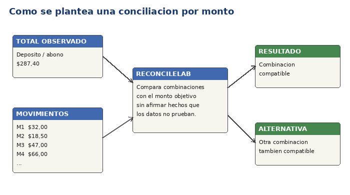

ReconcileLab ayuda a examinar un monto total y determinar qué movimientos candidatos pueden explicarlo.

Del monto observado a una o varias combinaciones compatibles.
Además de servir como ejemplo de conciliación, ReconcileLab permite observar una idea fundamental de los algoritmos: un mismo problema puede requerir examinar muchas posibilidades, pero una regla bien justificada puede evitar parte de ese trabajo sin cambiar la respuesta correcta. Al comparar una búsqueda exhaustiva con una búsqueda que descarta rutas imposibles, el lienzo hace visible qué trabajo se realizó, qué trabajo se evitó y cómo cambia el costo de resolver exactamente el mismo caso. La intención no es convertir la ayuda en un curso de programación, sino dar contexto a lo que se está viendo.